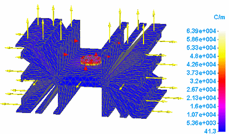
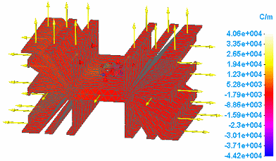
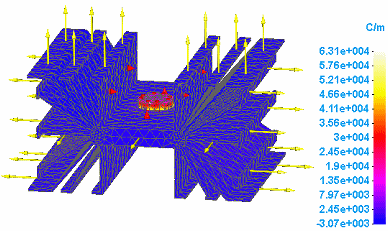
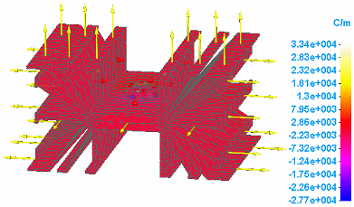
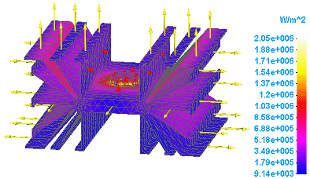
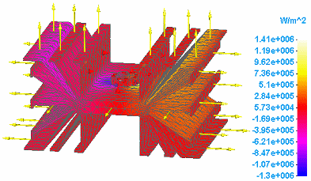
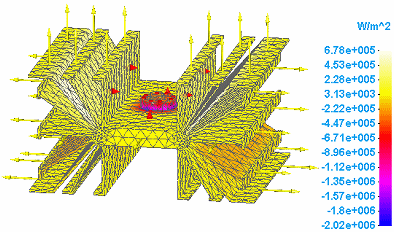
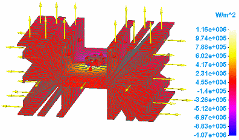

Heat flux component plots
Heat flux plots show the effect of thermal energy exchange in thermal studies. They measure the rate that thermal energy is transferred through a unit area. Heat flux plots also show the temperature gradient distribution across elements in the model.
Heat flux plots are generated for heat transfer studies and for thermal stress analysis, which in Solid Edge Simulation is evaluated using a thermal coupled study.
When you select Heat Flux from the Result Type list in the Data Selection group, you can review the simulation results in any of the following heat flux component plots:
Temperature gradient plots
Temperature gradient plots show the change in temperature across an element, per unit length. You can select the following data types from the Result Component list in the Data Selection group.
-
Total Temp Gradient

-
X Temp Gradient

-
Y Temp Gradient

-
Z Temp Gradient

Heat flux data plots
You can choose heat flux component plots, which measure the rate that thermal energy is transferred through a unit area, by selecting the following heat flux data types from the Result Component list in the Data Selection group.
-
Total Heat Flux

-
X Heat Flux

-
Y Heat Flux

-
Z Heat Flux

How do I
Plot resultsLearn more
Plotting resultsResult plots for mixed mesh models
Displacement component plots
Stress component plots
Constraint component plots
Strain component plots
Beam properties
Beam reaction component plots
Beam stress component plots
Beam diagrams
Temperature plots
Applied temperature plots